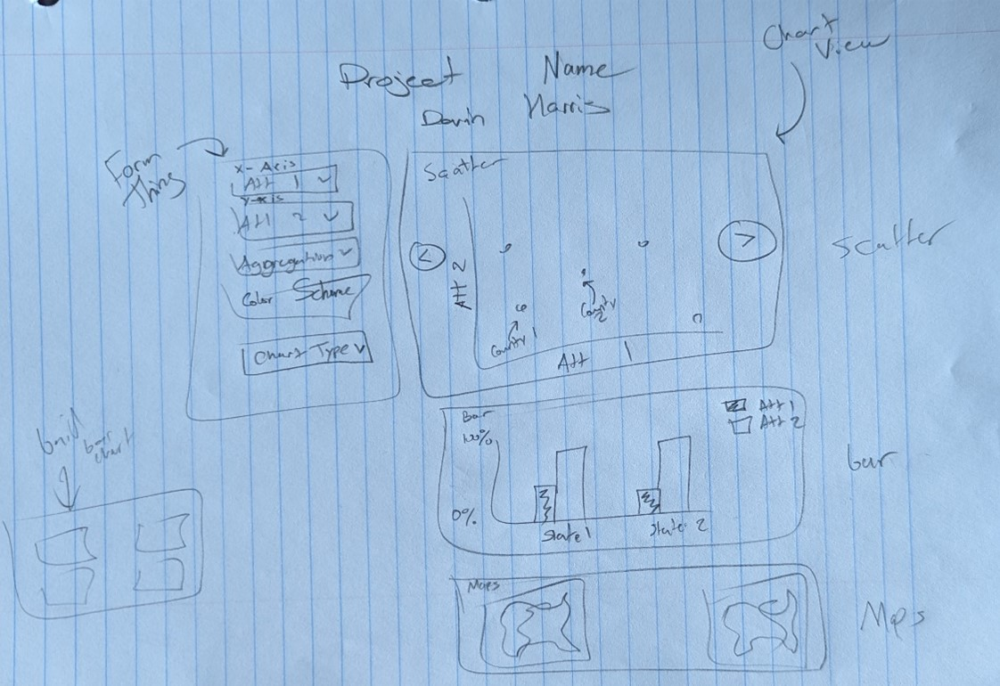
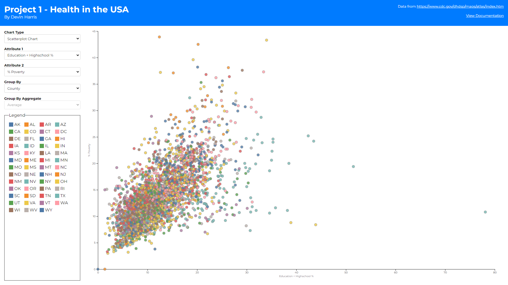
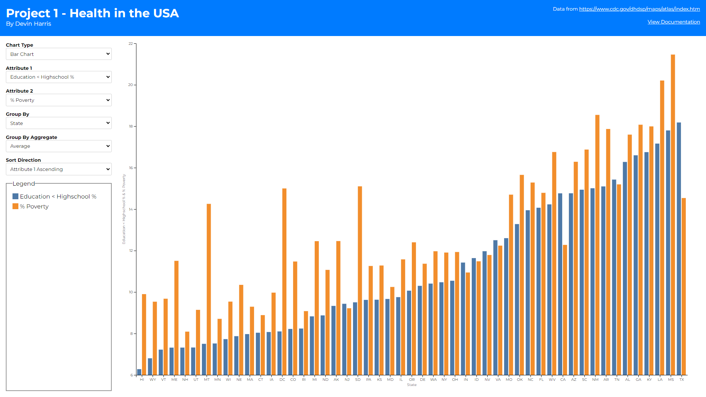
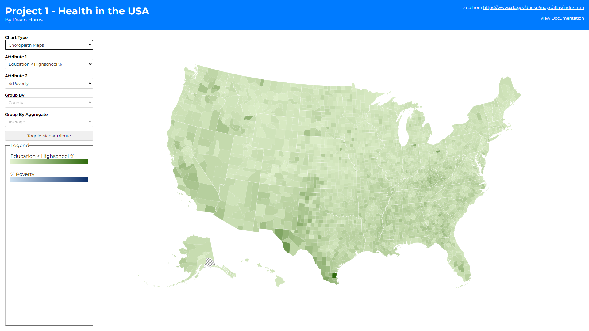
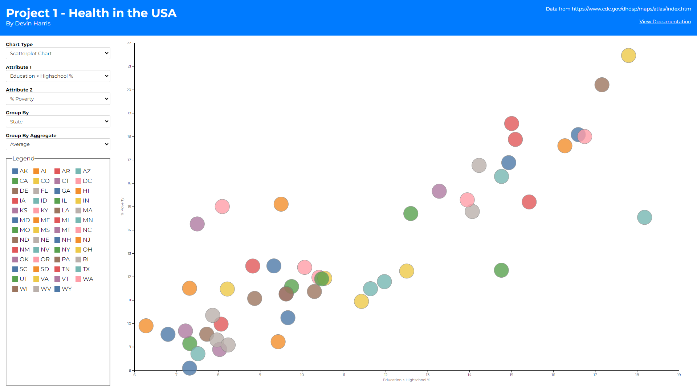
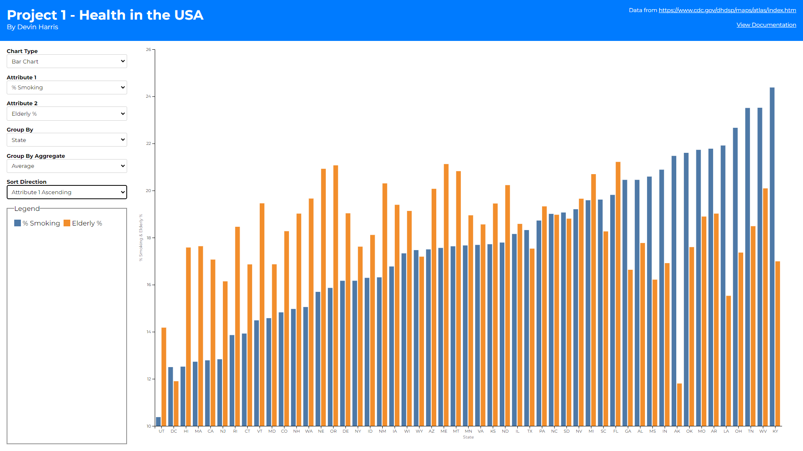
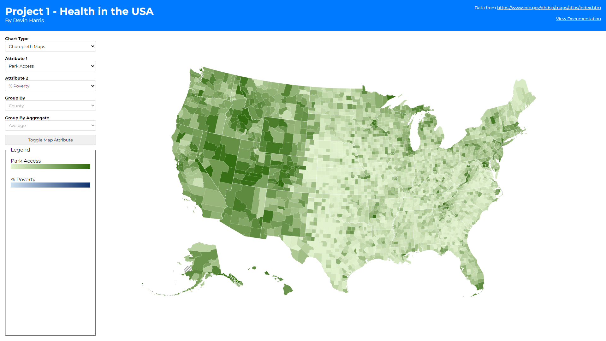

The motivation for this project was to illustrate potential correlations and trends between different economic, environmental, behavioral, demographic, and health related factors across all the U.S. counties. The goal of the project was to help people understand how these factors can influence each other while also providing quantitative data to each U.S. County.
Motivation
The Data
The data behind this project was pulled from the US heart and stroke atlas (https://www.cdc.gov/dhdsp/maps/atlas/index.htm) and was represented by a csv with attributes such as poverty_perc, air_quality, urban_rural_status, and many others per U.S. county.
Sketches
I made the following sketch at the beginning of this project to help illustrate how I could visually represent this data in an easy-to-understand way.
 * More on reasoning behind these components in the gui section *Gui
The above sketch then translated to the actual visualization of these components in my app gui.



As you can see there are 3 different views (1 for each chart type). I then have a global form on the left-hand side that provides attribute changing, grouping/aggregating, and in some cases sorting functionality. I wanted to make these controls shared between the different chart types as much as possible to make switching between them feel more fluid and keeping the same selections between charts. The most interesting thing about this form section to me is the grouping functionality. Upon looking at the data I found that showcasing datapoints for all 3000+ counties would be difficult in some cases. Thus, I wanted a way to limit the number of datapoints for these instances. By grouping all the counties into their respective state, or urban rural status I can reduce the number of datapoints to render dramatically. This led to the question of how should I group them? Should I average all the datapoints together? Take the maximum value? This is where the group by aggregate selection came in. This allows users to not only group datapoints together but decide how to aggregate the values of that group as well. You may also notice that when the bar chart is selected, there are some additional selectors.
- The first is a slider to denote the minimum width of each bar in the bar chart. This was created after I realized rendering two bars for each county (1 for each attribute selected) required more space than my laptop had to assign even 1px to said bars. Thus, I added a minimum width of 150px to each bar and allowed horizontal scrolling on said chart. This helps in cases where there are a lot of bars on the chart but detracted from the ability for users to see overall trends. Allowing them to decrease that min width pulls more data points into view to better assess those overall trends (with the drawback of potential x-axis overlapping).
- The second is a sorting selector. This was created again to help assess that overall trend I mentioned in the point above. Assessing which county/state has the highest/lowest value in the bar chart was difficult before this selector. With it, sorting allows you to pull the highest or lowest values to the left most points on the graph which also help show the general slopes of whichever attribute you are sorting over. Alphabetical sorting also helps users find a specific county/state/urban rural status they are looking for without having to scroll blindly.
There is also a legend section to help illustrate what colors line up to what groups or values, again depending on chart type. The following rules were followed for this legend and color scheme building within the charts:
- Scatter plots color their dots based on the state if the group by is county or state. This is because a legend with a color for every county was hard to sift through and did not seem to help the visualization. If group by is urban-rural-status the 4 statuses are used as the legend domain.
- Bar charts color their bars based on attribute. I decided to show bar charts as two bar per x axis tick because it helped to compare the two attributes per county/state/urban-rural-status easier. This of course led me towards keeping the colors consistent between attributes to better showcase how they compare across different points on the x-axis.
- Choropleth maps used a green and blue sequential scale for the 1st and 2nd attribute selected respectively. This helps differentiate the two maps without having to label which map is showing which attribute while also showing the geographical hotspots/lowspots for each attribute across the United States.
Finally, the choropleth maps behave in an interesting way. At first, I wanted to display two maps side by side (1 for each attribute) but quickly realized that horizontal scroll would be needed to do this and comparing over scroll felt incorrect. Thus, I opted to add more controls on the right-hand side to allow the user to toggle how the coloring is applied to a single map (based on the first or second attribute depending on how many times the toggle button is clicked). This prevents the user from having to sift their eyes across two different maps when they want to compare those hot/low spots I mentioned above while also giving more screen real estate to the map. This chart also allows for selecting counties (which show up in that right hand side as well as with a border highlight on the map) for easy comparing between these two attributes as well.
Discovery
There were tons of findings you can discover with this application. Here are some interesting ones I found:

Above I selected “Education < Highschool %” as my x-axis and “Poverty %” as my y axis. Grouping by state we then see that on average the more people with less than high school education the more people there are in poverty (in general)

Above we see that the average “% of smokers” per state does not really translate to the average “air quality” per state, which seemed a little suprising.

And finally, above you can see the west has substantially more park access than the east.
Future Works
There are some improvements I would liked to have made to this project given I had the time. Firstly, I wanted to be able to click the legend swatches on the bar and scatter charts to hide/show certain data points. This would have allowed a lot more narrowing of comparisons, which I think could be useful. I also would have liked to utilize the selection I did on the maps with the other charts. Maybe selecting counties over any chart could show up in the right-hand side regardless of chart type? My main question on that was how would changing the group by selection affect that. If I had counties selected, then switched to selecting states I would probably have to clear the previous selection which I haven’t decided if I’m ok with thus why I didn’t do it.
Process
For this project I used d3, svelte, and typescript. I unfortunately was told this was not allowed late into the project. Reasons being for consistency between projects and other classmates. I however have javascript experience and wanted my portfolio to showcase a new skill so hopefully this does not detract from the project.
Because I used svelte I built components for each of my chart types instead of the class based approach the vanilla JavaScript examples provided. I then had a form component and utilized svelte stores to share the selections from this form to the chart components as they changed. This opened the door for me to provide wrapper container components that conditionally rendered one of the charts based on the chart type, and automatically regrouped the data and reinitialized the chart components when the group by or group by aggregate values changed.
You can run it by cloning the project, installing Node and Npm, running “npm install” in the terminal from inside the cloned directory, and running “npm run dev” to start a local instance of the project.
Check out the links below to view the live site and code as well!